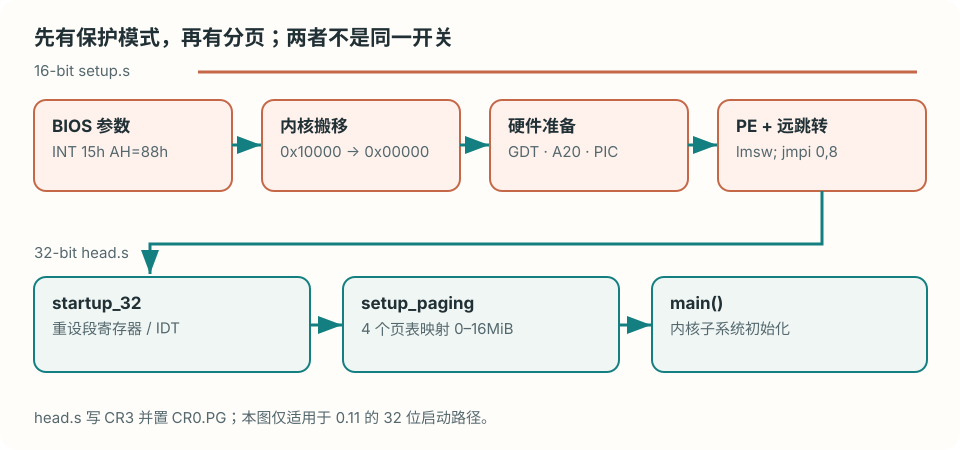
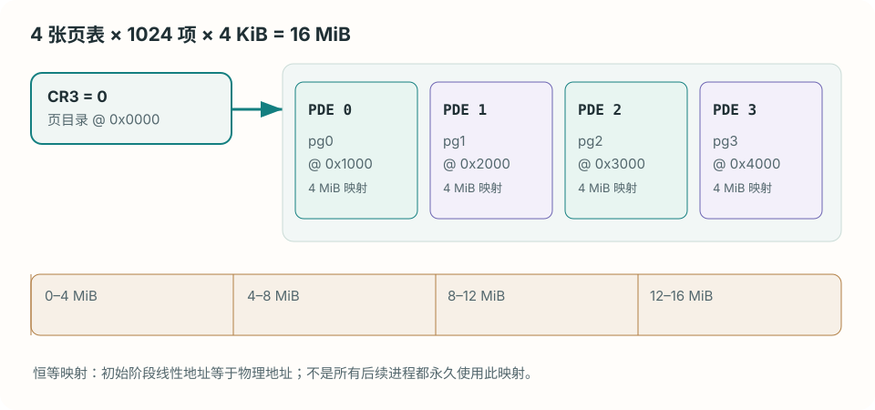

从实模式进入分页：setup.s 与 head.s
把 BIOS 参数收集、system 搬移、A20、GDT、PE、初始页表和 CR0.PG 串成可以逐条核对的执行顺序。
模式切换 · 初始分页模式切换不是一次性动作
bootsect.s 已经将 system 装到了 0x10000，但 head.s 的开头明确说自己的启动地址是 0x00000000。这不是矛盾：setup.s 会先把 system 向下搬移，然后才进行模式切换。
把“进入保护模式”和“开启分页”说成同一操作，是早期内核文章中很常见的错误。Linux 0.11 分两个阶段完成：setup.s 负责 BIOS 信息、内核搬移和保护模式入口；head.s 则在 32 位代码中建立初始页目录和页表，最后置位 CR0.PG。

先把 BIOS 结果保存下来
0.11 的 boot/setup.s 使用 BIOS 中断读取屏幕光标、扩展内存、显示模式和硬盘参数，写入物理 0x90000 附近。这片区域原本存放搬移后的 bootsect，但其任务已完成，所以可以复用。
mov ax,#INITSEG
mov ds,ax
mov ah,#0x88
int 0x15
mov [2],ax这里的 AH=0x88 是重要的版本锚点：它返回传统 BIOS 报告的扩展内存大小（以 KiB 为单位），写入 0x90002；后续 init/main.c 通过 EXT_MEM_K 读取此位置。其他 BIOS 扩展内存服务可以存在于后来的系统中，但不能当作 0.11 这几行代码的替身。
system 在哪里被移动
在禁止中断后，setup.s 以 0x10000 为来源，把 system 分块复制到 0x00000 起始处。它按 64 KiB 段向低地址移动，目标段从 0 开始，源段从 0x1000 开始。由于目标地址低于源地址，按向前方向逐块复制不会覆盖尚未读取的更高源块。
cli
mov ax,#0x0000
cld
do_move:
mov es,ax
add ax,#0x1000
cmp ax,#0x9000
jz end_move
mov ds,ax
sub di,di
sub si,si
mov cx,#0x8000
rep
movsw
jmp do_move每轮 0x8000 次 movsw 正好复制 64 KiB。循环覆盖了预留的 system 范围，未必等于内核实际有效代码的逐字节长度。它做的是历史启动布局约定下的整块搬移，不是现代 ELF 加载器的段解析。
GDT、A20、PIC 和 PE 的先后关系
完成搬移后，代码装载临时 IDT/GDT。GDT 描述将被使用的代码段和数据段；A20 使寻址不再沿用早期 20 位地址回绕行为。然后重新编程两个 8259 PIC 的中断向量，避免它们与 CPU 异常向量冲突。注意这些都是进入保护模式前的硬件准备。
mov ax,#0x0001
lmsw ax
jmpi 0,8lmsw 设置机器状态字中的 PE 位；随后必须用远跳转加载新的代码段选择子 0x0008，把执行流转移到搬移后的 head.s 入口。此时尚未通过 CR0.PG 开启分页。请把“保护模式”理解为一种处理器执行与保护机制，不要将它等同于“所有内存已经分页”。
用四张页表理解初始 16 MiB 映射
head.s 的 startup_32 先重新设置段寄存器、堆栈、IDT 和 GDT，并检查 A20。setup_paging 随后在物理 0x0000 处设置页目录，在 0x1000、0x2000、0x3000、0x4000 处放置四张页表。

movl $pg0+7,_pg_dir
movl $pg1+7,_pg_dir+4
movl $pg2+7,_pg_dir+8
movl $pg3+7,_pg_dir+12
# ... 填写各页表项后 ...
xorl %eax,%eax
movl %eax,%cr3
movl %cr0,%eax
orl $0x80000000,%eax
movl %eax,%cr0
ret这里的 +7 表示低位的页面标志被设为 present、可写和 user（请勿把这些初始标志误当作现代安全建议）。CR3 指向页目录基址，CR0 的最高位 PG 开启分页。此后初始映射使 0–16 MiB 的线性地址与物理地址对应。
进入 C 代码之前最后发生了什么
head.s 预先在栈中安排返回地址和 main 的入口地址，然后跳到 setup_paging。分页建立后，ret 从栈上取得 main 的入口，这样便把控制权交给 C 层 init/main.c。因此“跳到 main”并不一定表现为一条普通 call main 指令。
本章的关键执行状态可以写成：16 位 BIOS 服务 → system 搬到 0 → 临时 GDT/A20/PIC → PE=1 → 32 位 head.s → CR3/PG=1 → main()。每个箭头都有对应的原始汇编证据。
为什么不能说 setup.s 已经打开了分页？（展开核对）
setup.s 结束时只完成保护模式入口；真正写入 CR3 并置位 CR0.PG 的代码位于 head.s 的 setup_paging。两者在不同文件和不同执行阶段中完成。
和 v0.11 原始汇编逐项核对
- setup.s：
AH=0x88、do_move、A20、8259、lmsw和jmpi。 - head.s：
startup_32、初始页表、setup_paging。 - init/main.c：
EXT_MEM_K读取 BIOS 结果及 C 语言初始化入口。
接下来进入第 6 章，追踪 main.c 初始化陷阱、设备、中断和最初的用户态进程。